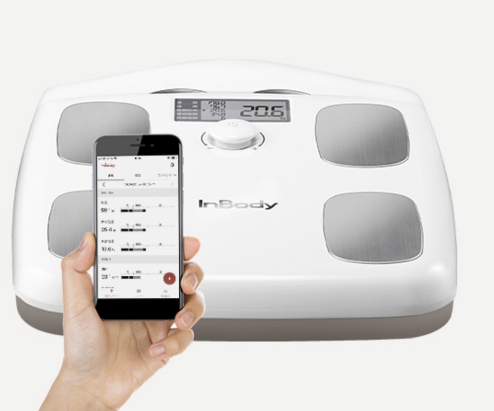
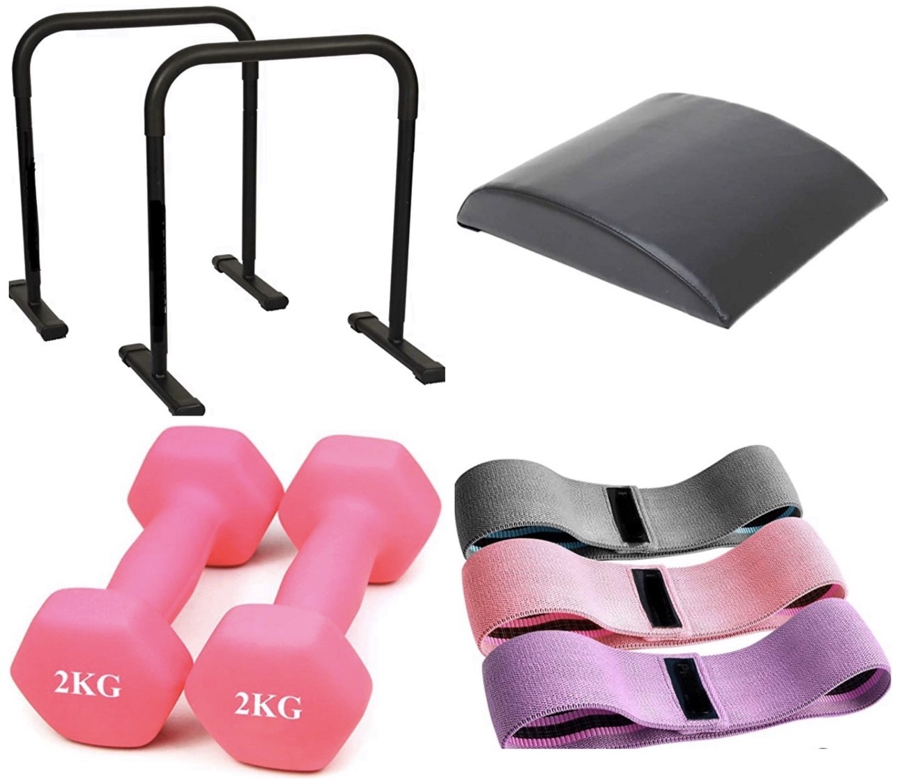
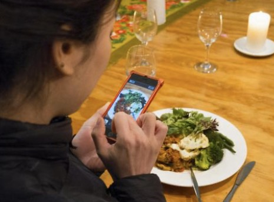
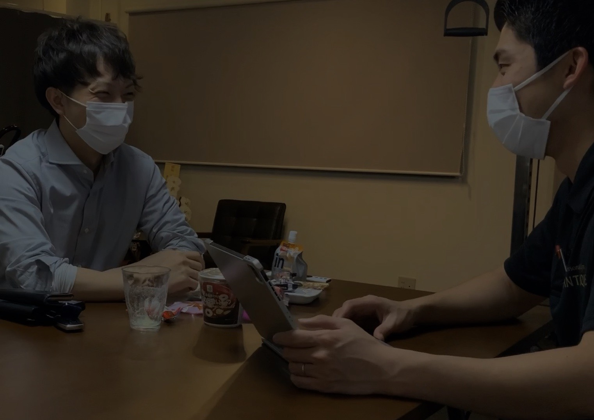
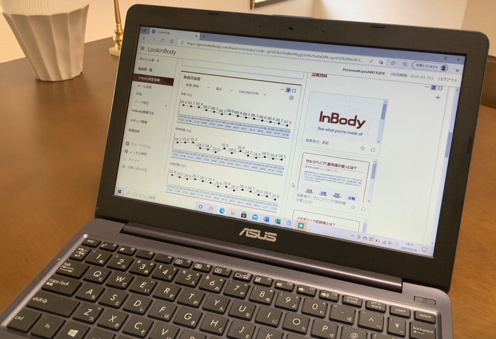

SUPPORTS 他社にないこだわりの5つのサポート
前職での成功体験と悔しい想いを基に、
より徹底したサポートが実現しました。
- 1st POINT

体重計のレンタル
INBODY社の体組成計INBODY Dialの無料レンタルを行っております。
お客様が自宅で測定を行うたびに、トレーナーへ自動的にデータが送信されることで、より徹底したサポートが実現します。
- 2nd POINT

トレーニング器具のレンタル
お客様の目的に合わせ、自宅トレーニング器具の無料レンタルも行っております。
忙しくてジムに通えない日でもご自宅でトレーニングすることで、効率よくボディメイクをすることが可能となります。
- 3rd POINT

毎日のお食事メール
LINEを活用し、お客様の毎日のお食事をトレーナーと共有します。
お客様の疑問や不安を少しでも早く解決できるよう毎日返信を行っております。
- 4th POINT

トレーニング後のカウンセリング
お客様に寄り添ったヒアリングを毎回実施します。ボディメイクにおける”教科書の方法”をお客様に押しつけるのではなく、お客様の日々の変化を毎回把握することでボディメイクの失敗を防ぎます。
- 5th POINT

安全とプライベート環境の徹底
お客様同士がすれ違うことのない予約管理と徹底した消毒を行なっております。
安心のコロナ対策と完全なプライベート環境で通うことが可能となります。
最後に
パーソナルジムは
最後の砦だと思っております。
前職では、
『ここで痩せなかったらダイエットをやめよう』
という覚悟でご入会された方と
日々向き合ってきました。
当ジムは
少しトレーニングがしたい方にとっては
過剰なサービスかもしれません。
しかし、
ご入会された方が絶対に結果が出るよう
他社には無いサービスも
加えさせていただきました。
結果にこだわるお客様
リバウンドしたくないお客様
お客様との出会いを楽しみにしております。
隠れ家パーソナルジムANTIQUE
柴田